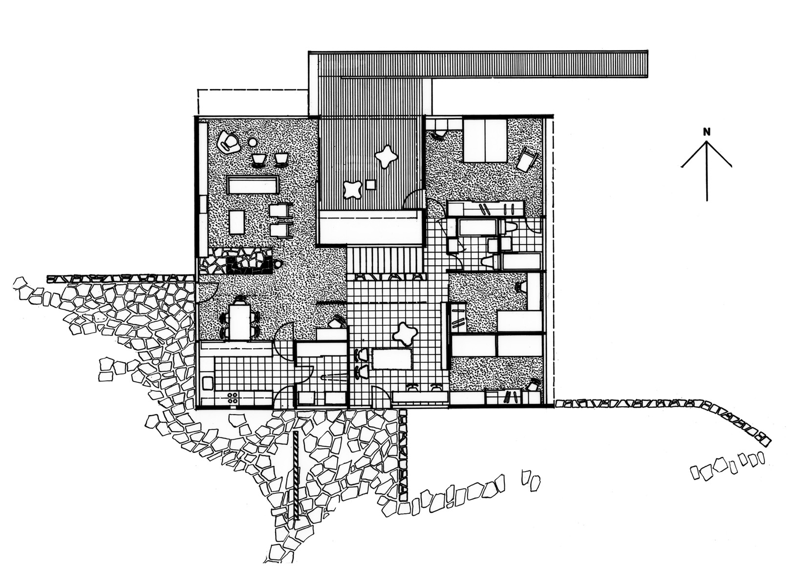

When completed in 1950, the house overturned almost every convention of suburban home design.
The radical design both inside and out integrated architecture, art and technology in a bold and optimistic
vision for a new way of living.
Today, still surrounded by bushland with panoramic views of Ku-ring-gai Chase National
Park, the house is one of the finest examples of mid 20th-century modern domestic architecture in Australia,
and its furniture and fittings form one of the most complete and intact post World War II design collections
in public ownership.
"When designing a house, the contemporary architect thinks of an
'environment for living' rather than of empty box-like rooms ... he
designs actual spaces in the interior for specific purposes and designs
the furnishings and equipment that go into them."
The floor plan was equally modern.

The house is divided into two distinct zones – the living or public areas and the sleeping or private areas – linked by a transitional zone
of a central playroom, stairs and terrace that can be used to extend either public or private areas, depending on the occasion.
Instead of conventional walls, there are flexible dividers:
an internal curtain which allows
the playroom space to be isolated from or connected to the surrounding rooms, and the bedrooms off the playroom
have sliding access doors, while the kitchen servery, fireplace and key pieces of furniture help to define the
changing focus and function of a space.